Обзор интерфейса и основных действий в среде разработки
- Навигатор (1C:PROJECT EXPLORER) — показывает структуру разрабатываемого проекта;
- Поиск (SEARCH) — позволяет найти файлы проекта, содержащие указанную строку;
- Отладка (DEBUG) — позволяет выполнять отладку приложений;
- Схема (OUTLINE) — показывает структуру редактируемого XBSL- или YAML-файла;
- Свойства (PROPERTIES) — показывает свойства выбранного элемента проекта;
- и другие (см. меню ).
- Боковые панели — в левой боковой панели стандартно открываются представления 1C:PROJECT EXPLORER, SEARCH и DEBUG, в правой — OUTLINE и PROPERTIES;
- Нижняя панель — в ней стандартно открываются такие представления как PROBLEMS и DEBUG CONSOLE.
- Область редакторов - в ней стандартно открываются редактор встроенного языка и YAML-редактор.
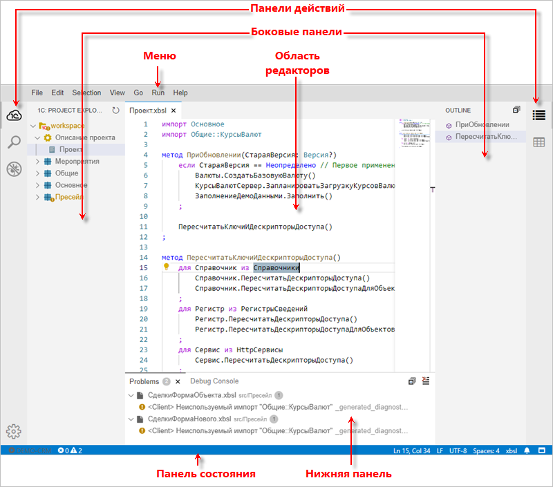
- Меню — предоставляет доступ ко всем функциям редактора;
- Панели действий — показывают значки тех представлений, которые открываются в этих панелях. Чтобы перенести представление в другую панель, перетащите мышью ее значок.
- Панель состояния — показывает состояние разрабатываемого приложения, наличие ошибок, параметры редактирования и наличие уведомлений.
Редактирование бок о бок
Вы можете открывать для редактирования столько файлов, сколько хотите, бок о бок по вертикали или по горизонтали.
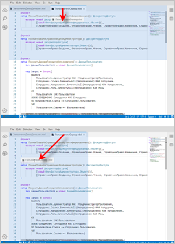
- Нажмите Keep Open в контекстном меню на вкладке открытого файла (или
Ctrl+K, а затем Enter). Затем откройте второй файл;
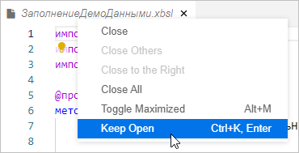
- Нажмите Ctrl+\, чтобы разделить активный редактор на два. Затем откройте второй файл;
- Чтобы открыть второй файл нажмите Open To The Side в его контекстном меню.
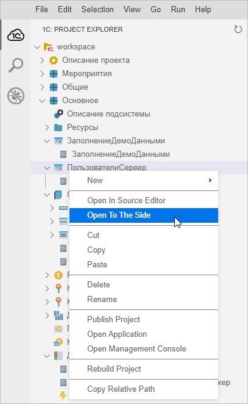
Максимизация области редакторов
Когда вы редактируете несколько файлов, есть быстрый способ максимизировать область редакторов, скрыв весь пользовательский интерфейс. Просто дважды кликните на вкладке любого файла (или нажмите Alt+M, или нажмите Toggle Maximized в контекстном меню вкладки).
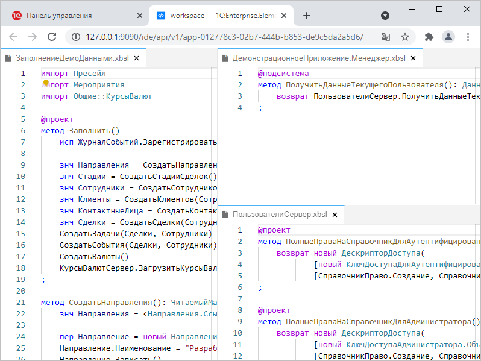
Этим же действием вы можете вернуть среду разработки к исходному состоянию.
Скрытие боковых и нижней панелей
Бывает так, что редактируя текст хочется скрыть только некоторые панели, увеличив тем самым область редактирования. Это можно сделать несколькими способами.
Во-первых, можно скрыть обе боковые панели — Alt+Shift+C (в меню ).
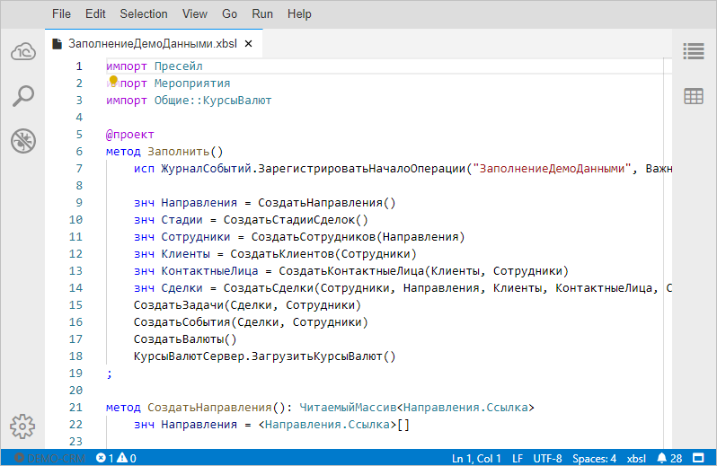
Во-вторых, можно скрыть только одну из боковых панелей. Для этого достаточно нажать на значок того представления, которое открыто в этой панели.
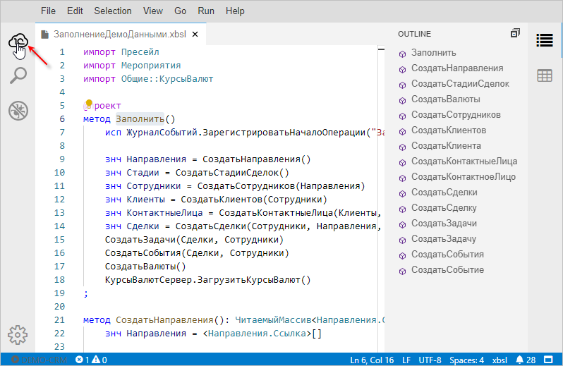
В третьих, вы можете скрыть нижнюю панель, нажав на значок Toggle Bottom Panel в правой части панели состояния (или Ctrl+J, или в меню ).
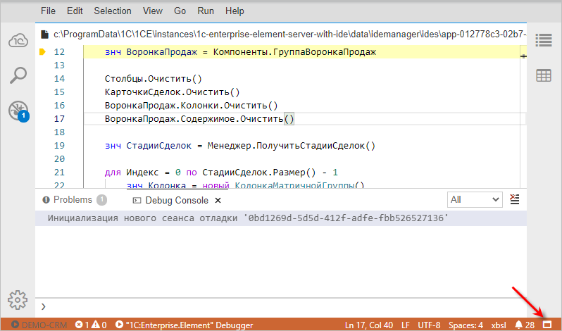
Режим предварительного просмотра
Когда вы нажимаете на файл проекта и он открывается в редакторе встроенного языка или в YAML-редакторе, то он отображается в режиме предварительного просмотра и повторно использует существующую вкладку. О том, что файл находится в режиме предварительного просмотра, говорит заголовок вкладки, написанный курсивом.
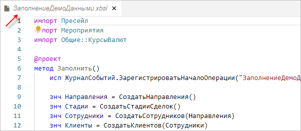
Этот режим полезен, если вы быстро просматриваете файлы и не хотите, чтобы у каждого открываемого файла была собственная вкладка.
- начинаете редактировать файл или;
- нажимаете Keep Open в контекстном меню на его вкладке или
- нажимаете Ctrl+K, а затем Enter,
то файл переходит в обычный режим. Следующий файл открывается уже в отдельной вкладке, но снова в режиме предварительного просмотра.
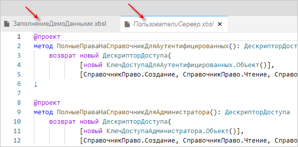
Миникарта
Миникарта редактируемого файла дает общий обзор кода, что удобно для быстрого перемещения по файлу и для его понимания. Миникарта отображается в правой части редактора.
Чтобы с ее помощью перемещаться по файлу можно просто щелкнуть на ней, либо потащить мышью за затененную область.
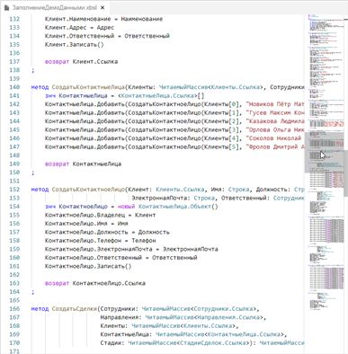
Вы можете отключить показ миникарты в меню — .
Представление OUTLINE
Представление OUTLINE при редактировании модулей показывает их структуру (список методов). Вы можете быстро переместиться к методу, просто нажав на него в OUTLINE.
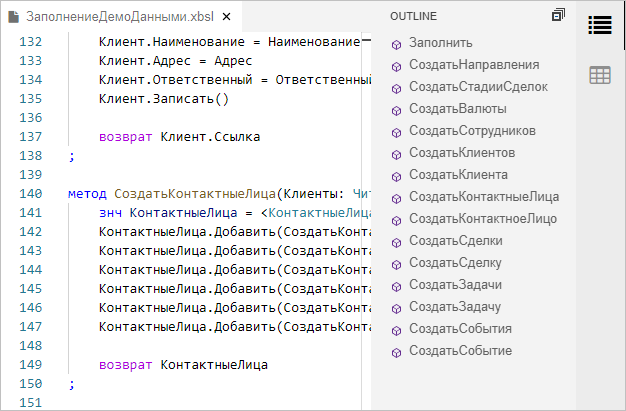
При редактировании YAML-файлов представление OUTLINE показывает иерархическую структуру файла и так же позволяет быстро перемещаться по его элементам.
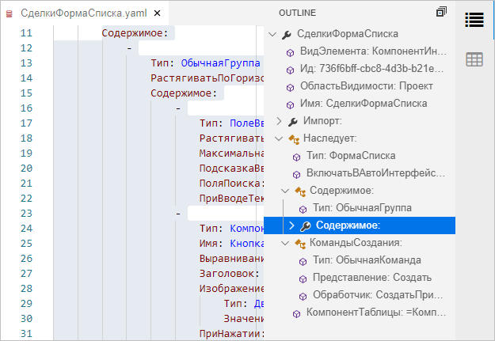
Панели действий
Левая и правая панели действий позволяют быстро переключаться между представлениями.
Вы можете изменить порядок значков в панелях, просто потянув за значок.
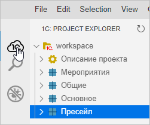
Внизу левой панели действий находится значок, позволяющий перейти к общим настройкам, а также настроить стили оформления.
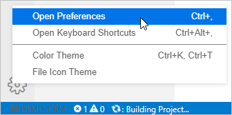
Палитра команд
Многие действия в среде разработки доступны с клавиатуры. Одно из самых полезных сочетаний клавиш — это Ctrl+Shift+P (в меню ). Оно открывает палитру команд. Из нее у вас есть доступ ко всем функциям среды разработки, включая сочетания клавиш для наиболее распространенных операций.
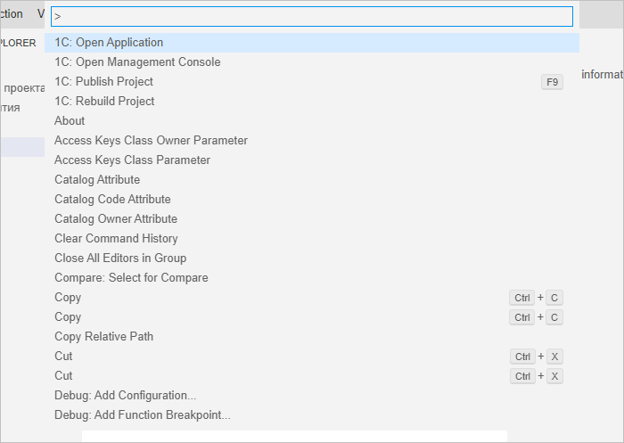
Чтобы посмотреть полный список горячих клавиш нажмите Open Keyboard Shortcuts в левой панели действий:
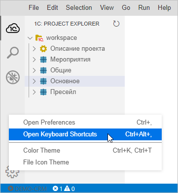